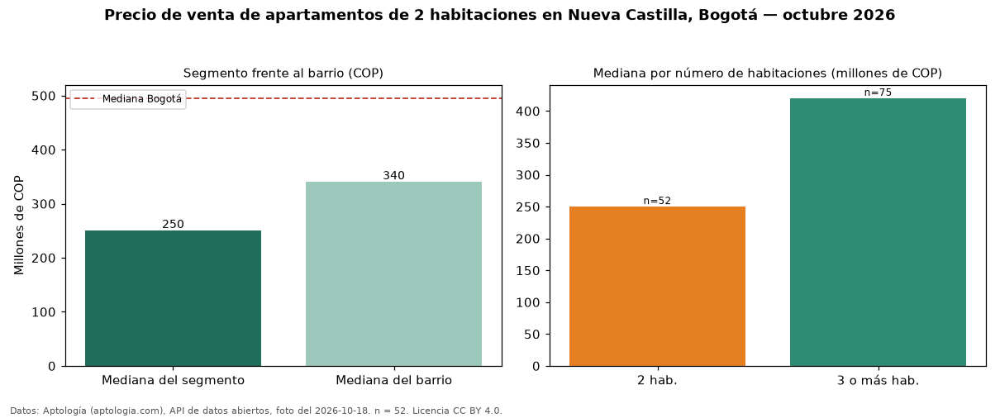

Precio de venta de apartamentos de 2 habitaciones en Nueva Castilla, Bogotá — octubre 2026
Con 52 avisos vigentes, el precio mediano de apartamentos de 2 habitaciones en venta en Nueva Castilla (localidad de Kennedy), Bogotá es COP 250 millones. Comparado con la mediana de la ciudad, COP 495 millones, la diferencia es de 49 % por debajo. Son 40 % de los 129 avisos de apartamentos en venta del barrio, cuya mediana general es COP 340 millones (−26 %). Con la mediana de arriendo del mismo barrio y tamaño (COP 1.400.000 al mes), el arriendo anual equivale a 6,7 % del precio de venta: una aproximación gruesa a la rentabilidad bruta, porque compara medianas de ofertas distintas. En el mismo barrio, la mediana es COP 420 millones con 3 o más habitaciones (n = 75). Datos: Aptología (aptologia.com), API de datos abiertos, licencia CC BY 4.0 — https://www.aptologia.com/venta/bogota/nueva-castilla. Archivos: PDF de 2 páginas, CSV con las cifras y gráfica PNG.

| Avisos únicos | 52 |
|---|---|
| Percentil 25 | — |
| Mediana | COP 250.000.000 |
| Percentil 75 | — |
Fuente: avisos vigentes de portales inmobiliarios recopilados por Aptología, deduplicados (mínimo 30 avisos únicos por celda). Precios pedidos, no cerrados. Fecha: 2026-10-18.